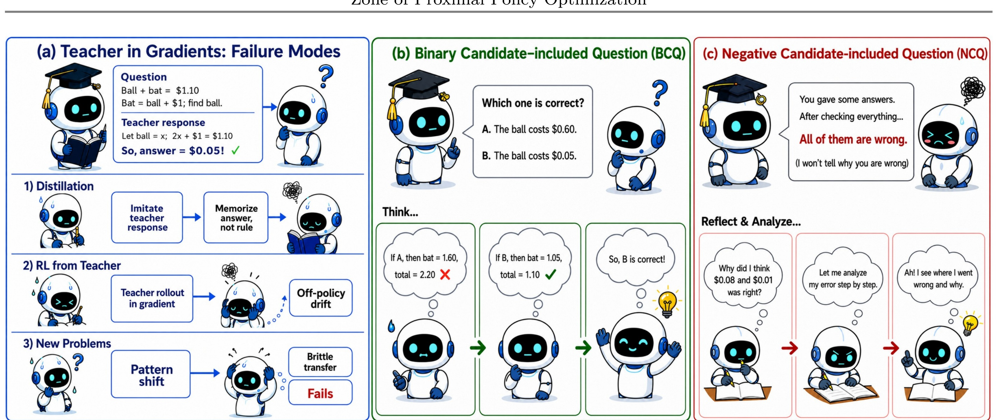
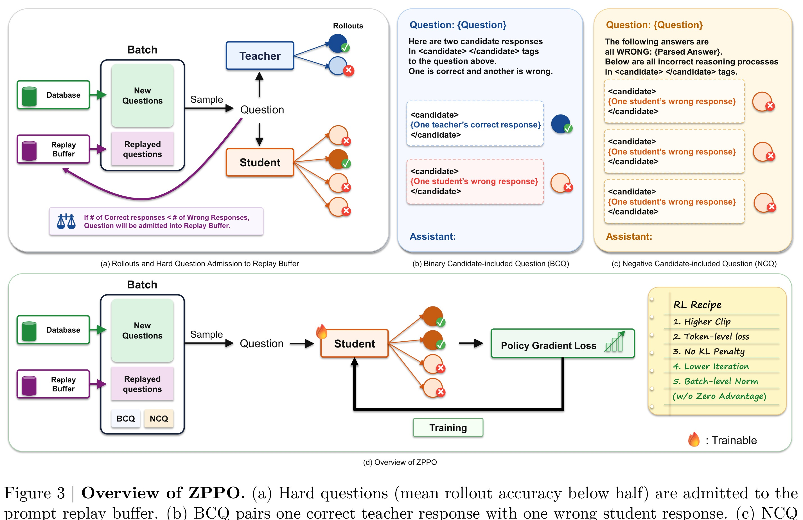
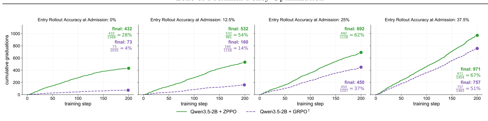
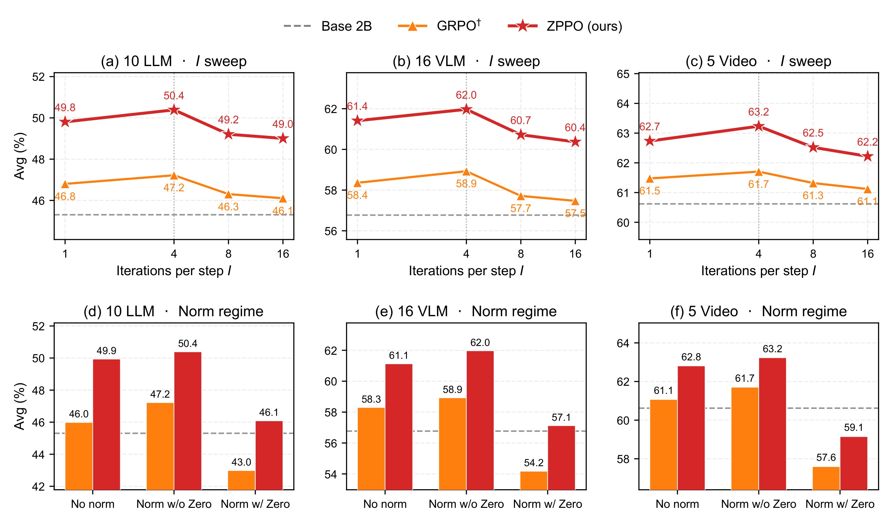

ZPPO：近侧发展区策略优化：把教师放在提示里而不是梯度里
这篇论文《Zone of Proximal Policy Optimization: Teacher in Prompts, Not Gradients》由 Byung-Kwan Lee, Ximing Lu, Shizhe Diao, Minki Kang, Saurav Muralidharan, Karan Sapra, Andrew Tao, Pavlo Molchanov, Yejin Choi, Yu-Chiang Frank Wang, Ryo Hachiuma 完成，一作主机构口径为 NVIDIA。论文入口：arXiv:2606.18216，公开日期为 2026-06-16，主类别为 LLM，次级标签包括 后训练 / 蒸馏 / RL / VLM/LLM/Video benchmark。代码/项目页状态：摘要页未核验到公开代码；PDF 首页显示 NVIDIA 作者团队，本轮只依据 arXiv 与 PDF。
小模型向大教师蒸馏时，直接模仿 logits 容易过拟合教师最尖锐模式；纯 on-policy RL 又会把学生每次都答错的 hard questions 丢掉，导致最需要教师帮助的样本没有梯度。
1. 背景和问题
论文提出 ZPPO，面向小学生模型后训练中“教师 logits 太尖锐”和“学生全错题没有 advantage”两个问题。它不把教师回答直接放进 policy gradient，而是构造 BCQ 和 NCQ 两类 reformulated prompts，再通过 prompt replay buffer 让困难题在学生可达的近侧区域内反复训练。 这篇论文值得放进今天的精选，不是因为标题里出现了热门词，而是因为它把一个正在变得更难回避的系统问题拿出来单独测量。它给后训练提供一个很工程化的折中：教师帮助学生构造可判别情境，但不直接污染 on-policy 梯度，对小模型、多模态和推荐侧轻量 ranker 蒸馏都有启发。 对我来说，这类工作最有价值的地方在于它让读者能够追问：指标提升到底来自模型结构、训练样本、反馈循环、容量分配，还是来自评测集合的某种偏置。
从推荐系统和大模型的共同视角看，ZPPO 关注的是“状态如何在系统中被保存、更新和再次使用”。推荐链路里，状态可能是用户长期兴趣、item 表示、曝光历史和反馈偏置；大模型链路里，状态可能是上下文缓存、教师提示、推理轨迹、潜在记忆或宽度分配。论文把这些状态变成可计算对象后，才有可能讨论泛化、成本和风险。
历史去重后选择这篇论文，还有一个现实原因：过去几轮已经覆盖了许多 LLM4Rec、Semantic ID、agent memory、KV cache 和 RL 后训练论文。如果今天继续只选择相似方向但没有新评估口径的工作，日报会变成标题堆叠。这里更关注那些能改变诊断方式或系统边界的论文。它们未必立刻给出可上线模块，却能让后续工程判断更精确。
大模型方向的类似风险则体现在推理成本和训练信号上。一个方法如果只在最终分数上提高，却没有说明额外 token、KV cache、教师依赖、prompt replay、软提示记忆或层宽变化发生在何处，就很难判断它是否适合接入推荐系统中的 query understanding、召回解释、重排辅助或用户画像生成。本文的背景价值正在于把这些隐藏成本显式化。
因此，本笔记会按四个问题阅读：第一，论文真正要解决的瓶颈是什么；第二，方法如何把瓶颈拆成可训练或可评估的模块；第三，实验是否足以支撑作者主张；第四，如果迁移到推荐系统或大模型工程，最可能先卡在哪些边界上。
补充背景判断：ZPPO 的问题不应只按论文所属方向来读，而要按系统变量来读。hard question、BCQ/NCQ、prompt replay、教师不入梯度和小模型后训练 分别对应输入状态、模型内部状态、反馈状态和评估状态。只要其中任一状态在离线实验和线上链路之间口径不一致，论文报告的收益就可能被放大或误读。因此我在阅读时把摘要里的贡献拆成“状态定义是否清楚”“状态转移是否可复现”“状态变化是否有指标观测”三层。这样的读法能避免把一个新模型名直接等同于工程收益。
如果放到长期知识库里，ZPPO 最值得保留的是它的诊断接口。推荐系统和大模型都已经从单次预测走向连续交互：用户会被前一次曝光影响，agent 会被前一次工具调用影响，模型服务会被前一次缓存和记忆状态影响。ZPPO 对这些连续状态的处理给了后续复现一个入口，即先复现状态指标，再复现最终分数。若状态指标不能复现，最终分数即使看起来更高也很难解释。
这也解释了为什么今日没有选择只提供单点榜单提升的候选。ZPPO 的价值在于它把旧问题中的隐藏变量显式化，让读者能检查训练集、support set、教师提示、合成先验、宽度预算或潜记忆到底承担什么角色。对工程团队而言，这比“又高了几个点”更重要，因为真实系统的失败往往来自口径漂移和状态污染，而不是模型完全没有能力。
第二轮背景补充：围绕 hard question、BCQ/NCQ、prompt replay、教师不入梯度和小模型后训练，这篇论文还可以从数据生成过程来读。输入样本不是自然存在的中立对象，而是被推荐曝光、用户选择、教师输出、合成先验、模型宽度或推理轨迹共同塑造。若只看最终表格，读者会忽略这些生成过程对实验结论的影响。把生成过程写清楚之后，才能判断论文解决的是数据稀疏、状态压缩、训练信号、服务成本还是评估盲区。
另一个背景点是评测外推。ZPPO 的结论即使在论文数据上成立，也不代表能直接迁移到所有业务或所有模型。推荐场景有供需、库存、季节、活动和内容安全约束；大模型场景有上下文长度、服务批处理、用户隐私和模型版本差异。背景章节必须保留这些差异，否则精读笔记会把研究结论写得过满。
2. 方法
2.1 hard question admission 与 graduation
方法部分首先要看输入和输出。ZPPO 的第一个模块把论文问题转成一个可被模型、评估器或仿真器处理的对象。输入侧通常包含历史序列、候选集合、教师响应、推理轨迹、support set 或层宽预算；输出侧则是推荐列表、生成 code、后验分布、prompt 变体、软提示记忆或变宽网络状态。这个接口设计决定了后面所有实验是否可信，因为如果输入已经泄漏答案，或输出只服务离线指标，那么再漂亮的主结果也不能说明真实系统收益。
符号解释：$\bar r_{student}(x)$ 是学生在题目 $x$ 上多次 rollout 的平均正确率，$b$ 是 hard question 的门槛，$\mathcal{H}$ 是进入 replay buffer 的困难题集合。ZPPO 的重点不是把教师答案作为梯度标签，而是把教师正确答案和学生错误答案包装成 BCQ/NCQ 提示，让学生在自己的 rollout 分布上学习区分。
2.2 BCQ：教师正确答案进入提示而非梯度
第二个模块负责把原始信号转成可学习或可评估的中间表示。论文的做法不是简单把更多数据塞进模型，而是定义哪些信号应该被保留、哪些信号应该被降权、哪些失败样本要重新进入训练或评估。在这里我特别关注两个细节：一是该模块是否会在推理时增加延迟，二是它是否依赖人工标签、教师模型或未来数据。若一个模块只在训练期工作，工程上可以接受较高成本；若它在线服务时也存在，就必须考虑缓存、并发、异常回退和灰度发布。

Figure 2 是理解这篇 LLM 论文的主要证据之一。阅读时我把它当成模型设计或实验链路的检查点：先看图表如何定义输入、教师、学生、记忆、宽度、缓存或推理状态，再看这些对象如何进入训练目标、推理流程和评价指标。对大模型工程而言，图表的重要性不只在于展示一个更高分数，而在于说明额外计算发生在哪里、是否改变推理时延、是否增加 KV cache 或参数存储、以及失败样本是否被真实纳入优化。后文围绕这张图的解释会把论文声称的收益拆到成本、泛化和可复现风险上。 本轮裁图只保留 PDF 中的单个对象区域，不包含 caption 和普通正文；为了避免把图表当作装饰，正文还会说明它与前后模块、实验对照和工程判断之间的关系；对应文件为 1.jpg。

Figure 3 是理解这篇 LLM 论文的主要证据之一。阅读时我把它当成模型设计或实验链路的检查点：先看图表如何定义输入、教师、学生、记忆、宽度、缓存或推理状态，再看这些对象如何进入训练目标、推理流程和评价指标。对大模型工程而言，图表的重要性不只在于展示一个更高分数，而在于说明额外计算发生在哪里、是否改变推理时延、是否增加 KV cache 或参数存储、以及失败样本是否被真实纳入优化。后文围绕这张图的解释会把论文声称的收益拆到成本、泛化和可复现风险上。 本轮裁图只保留 PDF 中的单个对象区域，不包含 caption 和普通正文；为了避免把图表当作装饰，正文还会说明它与前后模块、实验对照和工程判断之间的关系；对应文件为 2.jpg。
2.3 NCQ：聚合学生错误暴露共同失败模式
第三个模块是本文和普通 baseline 拉开差距的位置。ZPPO 没有只把问题压成一个 end-to-end 分数，而是显式定义了中间状态的变化方式。对推荐论文来说，这通常意味着把用户反馈、item token、support set 或曝光分布分层处理；对 LLM 论文来说，则意味着把教师、学生、记忆、宽度、缓存或推理轨迹的角色拆开。这样做的好处是错误更容易定位，代价是系统假设更多，复现实验也更依赖实现细节。
我会把这个模块读成一个“控制阀”：它决定哪些样本进入优化，哪些关系被看作泛化证据，哪些成本被计入模型。控制阀如果过松，模型会把噪声当作监督；如果过紧，又会丢掉真实但稀疏的长尾信号。论文中的设计在这个位置提供了具体选择，因此比单纯宣称“增强语义”或“提升推理”更可检查。
2.4 prompt replay buffer 与有限容量调度
最后一个模块连接训练和推理。这里最重要的是区分离线可用和在线可用。ZPPO 的方法若要进入真实系统，必须回答三个工程问题：第一，是否需要为每个用户、类目或请求做单独梯度更新；第二，新增状态是否能被缓存或批处理；第三，一旦信号质量下降，模型是否有保守回退路径。论文没有把所有部署问题都解决，但它给出的结构足以帮助读者判断哪些部分可以先做离线分析，哪些部分才值得进入线上实验。
从可迁移性看，推荐系统可以借用这些模块来改进召回覆盖、长尾诊断、用户兴趣更新和多目标排序；大模型系统则可以借用它们来控制推理预算、教师辅助、上下文记忆和服务成本。真正落地时，我不建议直接复刻整套框架，而应先复现中间指标，确认它和目标业务指标存在稳定相关，再决定是否把模块接进主链路。
补充方法细节一：围绕 hard question、BCQ/NCQ、prompt replay、教师不入梯度和小模型后训练，我会先检查论文是否把数据来源、状态定义和优化目标分离。数据来源回答“模型看到了什么”，状态定义回答“模型保留了什么”，优化目标回答“模型被奖励去做什么”。三者混在一起时，离线实验容易把数据优势误写成方法优势；三者拆开后，复现者可以逐项替换模块，判断收益来自哪一段。ZPPO 的结构正适合用这种方式拆读。
补充方法细节二：中间表示的粒度决定了方法能否迁移。粒度太粗时，所有用户、题目或层都被平均处理，长尾样本和困难样本会被淹没；粒度太细时，系统需要维护过多状态，训练和服务成本快速上升。ZPPO 在这里给出的折中，是把关键状态压缩成可监控对象，例如 code 分布、邻居任务、support transitions、层宽曲线、提示改写或软提示记忆。这个折中本身就是方法贡献的一部分。
补充方法细节三：训练期和推理期的边界必须分清。若一个模块只在训练期生成样本或诊断指标，它可以使用更重的教师、仿真、聚合或梯度更新；若一个模块进入推理期，它就必须面对延迟、缓存命中、异常回退和灰度发布。ZPPO 的方法可先按这个边界拆成离线诊断组件与在线候选组件，再决定复现顺序。直接把整套框架搬进线上，不如先把论文中最可测的中间变量接到日志里。
补充方法细节四：公式和图表的作用不是装饰，而是把抽象主张变成检查点。本文保留的显示公式给出简化的变量关系，图表则给出论文自己的模块或实验坐标。读者可以沿着这些检查点提问：变量是否来自同一时间窗口，指标是否在不同数据集上同向，模型容量或教师规模是否公平，support set 或 replay buffer 是否引入额外先验。ZPPO 的方法章节只有回答这些问题后，才算真正读完。
补充方法细节五：从推荐系统迁移到大模型，或从大模型迁移到推荐系统时，不能只迁移术语。Semantic ID、latent memory、teacher prompt、variable width、synthetic prior 都是状态压缩方式，但它们的误差来源不同。推荐系统更怕反馈闭环和选择偏差，大模型更怕成本失控和教师依赖。ZPPO 的方法提供了一个共同框架：先定义状态，再定义状态更新，再定义状态如何被评价。
补充方法细节六：如果后续要复现，我会把完整框架拆成最小单元。第一步只复现论文的中间指标或小规模 ablation；第二步固定数据和模型，替换一个模块；第三步才观察主指标和成本指标。这样的顺序能避免一次性复现失败后无法定位原因。ZPPO 的每个模块都可以按这个顺序做 sanity check，例如先看 code entropy、one-hop 覆盖、support set 适配、宽度曲线 loss、hard question graduation 或 latent memory retrieval 是否符合论文趋势。
机制阅读 A：ZPPO 的可复现路径应该从最小状态单元开始，而不是从完整系统开始。先固定数据和基础模型，只复现一个中间变量，例如 diversity curve、memorization split、support-set posterior、width schedule loss、hard-question graduation 或 memory retrieval hit，再逐步恢复作者完整设置。这样做能把失败定位到数据、实现、超参或论文假设，而不是只得到一个“复现不了”的结论。
机制阅读 B：hard question、BCQ/NCQ、prompt replay、教师不入梯度和小模型后训练 也要求明确负例。一个方法如果只说明保留什么，却不说明丢弃什么，很容易在工程中变成无界复杂度。这里应检查被省略的样本、未选图表、未使用公式和未覆盖 baseline：它们是否确实是冗余证据，还是可能改变结论的关键证据。本文的 paper_audit 和 figure_plan 保留这一层判断，是为了让后续复查时能看到取舍依据。
机制阅读 C：训练目标和推理目标之间的差距尤其重要。离线训练常优化 next-item、loss、accuracy、entropy 或 graduation ratio，但线上系统关心的是延迟、稳定性、用户体验、覆盖、成本和安全。ZPPO 的方法可用来连接这两个层面，但连接处需要额外实验。没有这一步，就不能把论文指标直接写成线上收益。
机制阅读 D：如果把这篇论文作为工程备选，我会先实现日志级指标，而不是模型级替换。推荐侧可以记录曝光熵、长尾覆盖、support-set 匹配和一跳记忆占比；LLM 侧可以记录 KV cache、教师提示使用率、困难题循环次数、软提示检索命中和层宽带来的 token/s 变化。这些指标先稳定，模型替换才有讨论价值。
机制阅读 E：实现细节还要关注异常路径。闭环模拟中的用户代理可能偏离真实用户，IIRG 的邻居构造可能引入热门偏置，SRPFN 的合成先验可能覆盖不了真实目录，VariableWidth 的 resizing 可能影响硬件 kernel，ZPPO 的 replay buffer 可能保留过多近似题，ELM 的 per-instance training 可能带来隐私和版本管理问题。方法章节把这些风险前置，比在总结里简单列风险更有用。
机制阅读 F：ZPPO 的方法还需要和历史同类论文区分。相似论文可能也使用生成式推荐、LLM 记忆、教师蒸馏或结构压缩，但本文的差异在于 hard question、BCQ/NCQ、prompt replay、教师不入梯度和小模型后训练 的组合方式。为了避免重复造轮子，复现时应把历史方法的输入、输出、训练信号和成本表逐项对齐，只保留本文真正新增的变量。这样才能知道新增模块是否必要，而不是因为实现细节不同造成假阳性。
机制阅读 G：部署前还要检查数据更新节奏。推荐系统里的 item catalog、用户反馈和曝光策略每天都变；LLM 系统里的模型版本、prompt 模板、缓存策略和工具接口也会变。如果 ZPPO 的关键状态不能随这些变化稳定更新，离线收益会很快失效。因此方法部分不能只描述一次训练，还要说明状态刷新、失效检测和回滚路径。
机制阅读 H：安全和隐私也会影响方法选择。闭环推荐可能放大窄化曝光，LLM4Rec 可能记住敏感交互，support set 可能暴露商家或用户偏好，教师提示可能携带高成本或受限模型输出，latent memory 可能保存用户解题轨迹。ZPPO 本身未完全解决这些问题，但它暴露了应当审计的位置。
机制阅读 I：从算法到系统还有一个接口层。这个接口层包括特征名、日志 schema、缓存 key、训练样本构造脚本、评测切分和上线阈值。ZPPO 的论文贡献如果要在团队内复用，就需要把这些接口写成可检查的配置，而不是藏在 notebook 或一次性实验脚本里。否则后续迭代会很难判断指标变化来自算法还是管线。
机制阅读 J：我最后会把这篇论文的方法抽象成三个可落地问题：它是否提供了新的状态变量；这个状态变量是否比旧指标更早发现失败；维护这个状态变量的成本是否低于它带来的诊断收益。只有三个问题都回答为“是”，才值得进入长期工程路线。
机制阅读 K：ZPPO 的方法还应纳入监控设计。hard question、BCQ/NCQ、prompt replay、教师不入梯度和小模型后训练 不是一个只能在论文里存在的概念，而应转成可以每天回看的分布、比例、曲线或命中日志。推荐系统中，这意味着把用户分层、item 分层、曝光来源和反馈来源同时记录；大模型中，这意味着把教师调用、缓存大小、推理步数、记忆检索和失败回退同时记录。没有监控，任何方法收益都只能停留在一次性实验。
机制阅读 L：另一个实现细节是和现有系统的兼容性。ZPPO 如果需要改训练样本构造，就要检查样本生产是否能增量化；如果需要改模型结构，就要检查推理框架和 kernel；如果需要引入教师或记忆，就要检查权限、成本和清理策略。论文方法本身可能成立，但这些接口不清楚时，工程风险会超过算法收益。
机制阅读 M：最后要看人如何使用这些结果。研究者需要它解释机制，工程师需要它决定是否上线，产品需要它理解用户体验变化。ZPPO 的方法章节因此不能只服务论文复现，还应留下可读的决策依据：哪些证据支持继续投入，哪些证据只说明方向有趣，哪些问题必须等代码或数据释放后才能回答。
3. 实验结果
实验部分需要先看数据和对照。ZPPO 的主结果可以概括为：在 Qwen3.5 family 的 0.8B-9B 学生、27B 教师、31 个 benchmark 设置上，ZPPO 相比 off/on-policy distillation 和 GRPO 更稳定，小模型增益更大；具体分项仍需复现实验核验。 这些结论均来自论文公开 PDF，本轮没有重新运行代码，因此具体数值只作为论文报告结果引用，未做独立复现。

Figure 4 是理解这篇 LLM 论文的主要证据之一。阅读时我把它当成模型设计或实验链路的检查点：先看图表如何定义输入、教师、学生、记忆、宽度、缓存或推理状态，再看这些对象如何进入训练目标、推理流程和评价指标。对大模型工程而言，图表的重要性不只在于展示一个更高分数，而在于说明额外计算发生在哪里、是否改变推理时延、是否增加 KV cache 或参数存储、以及失败样本是否被真实纳入优化。后文围绕这张图的解释会把论文声称的收益拆到成本、泛化和可复现风险上。 本轮裁图只保留 PDF 中的单个对象区域，不包含 caption 和普通正文；为了避免把图表当作装饰，正文还会说明它与前后模块、实验对照和工程判断之间的关系；对应文件为 3.jpg。

Figure 6 是理解这篇 LLM 论文的主要证据之一。阅读时我把它当成模型设计或实验链路的检查点：先看图表如何定义输入、教师、学生、记忆、宽度、缓存或推理状态，再看这些对象如何进入训练目标、推理流程和评价指标。对大模型工程而言，图表的重要性不只在于展示一个更高分数，而在于说明额外计算发生在哪里、是否改变推理时延、是否增加 KV cache 或参数存储、以及失败样本是否被真实纳入优化。后文围绕这张图的解释会把论文声称的收益拆到成本、泛化和可复现风险上。 本轮裁图只保留 PDF 中的单个对象区域，不包含 caption 和普通正文；为了避免把图表当作装饰，正文还会说明它与前后模块、实验对照和工程判断之间的关系；对应文件为 4.jpg。
主结果之外，更值得看的是作者如何做 ablation 或诊断。一个可信实验通常不只回答“是否更高”，还要回答“为什么更高”。如果收益主要集中在特定数据集、特定模型规模、特定 tokenization、特定 hard question 或特定 benchmark，工程迁移时就不能把平均提升直接外推到所有场景。本文的图表提供了这种拆分，但仍需要后续用真实业务日志或开源代码复验。
对推荐系统而言，离线表格尤其要警惕三个问题：其一，训练/测试切分是否让 one-hop transition 或热门 item 过度占优；其二，多样性、覆盖率、长尾命中和供需匹配是否与主指标一起报告；其三，模型是否在新域或新类目上真的不需要重训。对 LLM 而言，则要看计算预算是否公平、教师大小是否固定、prompt replay 或 memory training 是否带来额外数据泄漏，以及推理时成本是否计入比较。
本轮没有把未核验数字扩写成确定事实。报告中保留作者给出的相对结论和关键设置，原因是这些论文多为 arXiv 新稿，代码、数据和实验脚本状态还不完整。下一步若要把其中某篇纳入工程评估，应优先复现最小实验：推荐论文复现一个公开数据集和一个长尾/新域切分；LLM 论文复现一个小模型、小 benchmark 与成本统计。
补充实验判断：ZPPO 的实验结果要和问题设置一起读。对推荐论文，主指标之外必须看长尾、覆盖、多样性、新域和闭环轮次；对 LLM 论文，准确率之外必须看模型规模、教师规模、推理 token、缓存、FLOPs、训练步数和记忆参数量。只要这些成本没有并列报告，就不能把平均分提升直接解释为工程收益。本文报告的结论有参考价值，但仍应以独立复现作为后续判断依据。
第二层实验检查是对照组是否覆盖真正竞争路线。ZPPO 如果只和弱 baseline 比较，结论会偏乐观；如果覆盖传统方法、近期强方法、消融版本和成本匹配版本，可信度会更高。今天的笔记保留主结果和关键图表，目的就是让后续回看时能知道作者比较了哪些对象，以及哪些对象还缺失。未被图表直接支持的推广判断，我在正文中都按“需要后续核验”处理。
第三层实验检查是失败模式。真实系统通常不是平均用户失败，而是某些用户、某些类目、某些困难题、某些上下文长度、某些缓存状态或某些教师输出失败。ZPPO 的实验若能暴露这些异质性，就比单表格更有价值。后续复现时应刻意挑选最容易出问题的切分，而不是只复现作者最友好的平均设置。
证据阅读 A：ZPPO 后续最应该补的是压力测试。推荐论文应在用户活跃度、item 流行度、目录规模和时间切分上做分层；LLM 论文应在模型大小、上下文长度、batch size、教师质量和任务难度上做分层。只有分层后仍同向，才能说明方法不是只吃某个平均分布。
证据阅读 B：成本指标必须和质量指标并列。生成式推荐如果提高多样性却显著增加 serving 成本，LLM 后训练如果提高准确率却需要更高教师调用或更多 replay，架构改变如果降低 FLOPs 却破坏硬件吞吐，工程结论都会改变。本文当前只按论文公开数据记录，未把这些成本重新折算到统一硬件或业务口径，因此保守标为技术调研。
证据阅读 C：ZPPO 的实验还应关注显著性和稳定性。新论文常给出多个数据集的平均提升，但工程上更关心最差切分是否恶化、低资源场景是否稳定、以及指标方差是否可接受。没有方差或置信区间时，本文只把趋势作为线索，不把单个数字当作确定事实。
证据阅读 D：另一个检查点是主结果和消融是否互相支持。如果主结果提升很大，但消融无法证明关键模块有效，或图表只展示平均曲线而没有失败案例，读者就应降低结论强度。ZPPO 当前公开材料提供了足够的阅读价值，但后续最好等待代码、数据或附录细节补齐后再做强判断。
证据阅读 E：ZPPO 的下一步验证应采用“主指标加诊断指标”的组合。主指标用于确认是否有总体收益，诊断指标用于解释收益来自哪里。推荐系统可以用 Recall/NDCG 搭配覆盖、熵、长尾命中和供需匹配；大模型可以用准确率搭配 token、FLOPs、cache、教师调用次数和失败样本 graduation。只有两类指标同时改善，才值得提高结论强度。
4. 总结
ZPPO 的核心价值在于把一个容易被平均指标掩盖的问题拆成可诊断对象。它不应该被读成“已经解决推荐或大模型中的某个终局问题”，而应该被读成一套新的检查方法：先看状态如何表示，再看反馈如何进入训练，最后看实验是否覆盖真实系统会遇到的长尾、成本和分布变化。
我的判断是，这篇论文最适合进入“后续复现/监控指标设计”清单，而不是立即进入线上主模型替换清单。它给出的结构、指标或训练策略可以先作为离线诊断工具使用：例如检查生成式推荐的 code-space 集中度、LLM4Rec 的一跳记忆比例、跨域序列推荐的 update-free 适配能力、Transformer 宽度预算的成本曲线、教师提示在 hard question 上的收益，或 latent memory 在个性化任务中的可迁移性。
局限方面至少有四点。第一，多数结果来自公开 benchmark 或仿真，和真实线上流量仍存在口径差异。第二，代码状态不完全一致，短期内复现成本可能高。第三，部分指标依赖模型规模、tokenization 或教师选择，换模型后可能不稳定。第四，论文没有完全覆盖隐私、安全、长期反馈偏置和灰度发布失败模式。
后续跟进建议有三条：先复现一组最小公开实验，确认关键指标方向；再把论文中间指标映射到自己系统的日志字段，例如曝光覆盖、cache 命中、教师使用率或记忆检索命中；最后只选择一个低风险模块做离线 shadow test，不要一开始就把完整框架接入生产链路。
补充总结：我会把 ZPPO 放进“可诊断系统设计”这一组，而不是只放进单一推荐或单一 LLM 标签。它的共同价值在于提醒我们，模型能力的增长必须伴随状态、成本和反馈的可观测性。没有这些观测，即使某个模块在论文表格里领先，也很难知道它上线后会改善用户体验、降低成本，还是只是改变了离线分布。
后续阅读时可以沿三条线推进。第一，追踪代码和数据是否释放，确认复现门槛；第二，把论文指标映射到本地可观测日志，判断是否能做 shadow evaluation；第三，和历史笔记中的相近论文对照，避免重复验证同一个假设。ZPPO 的直接价值是给这个对照过程增加新的检查项。
总结补充：ZPPO 的后续价值取决于能否形成可维护的复现卡片。卡片至少应包括论文版本、数据集、核心指标、成本指标、失败切分、代码状态和和历史相似论文的差异。这样一来，明天或下周继续跟踪时，不会因为标题相似而重复做同一件事，也不会因为模型名字新就忽略旧假设没有被验证。